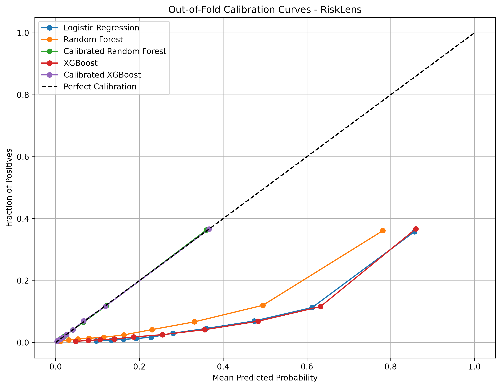
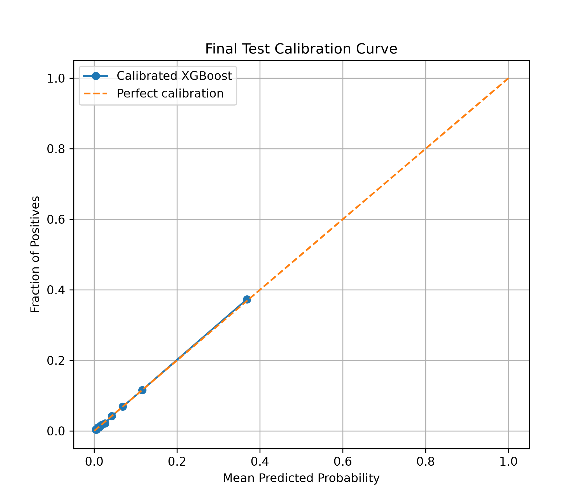
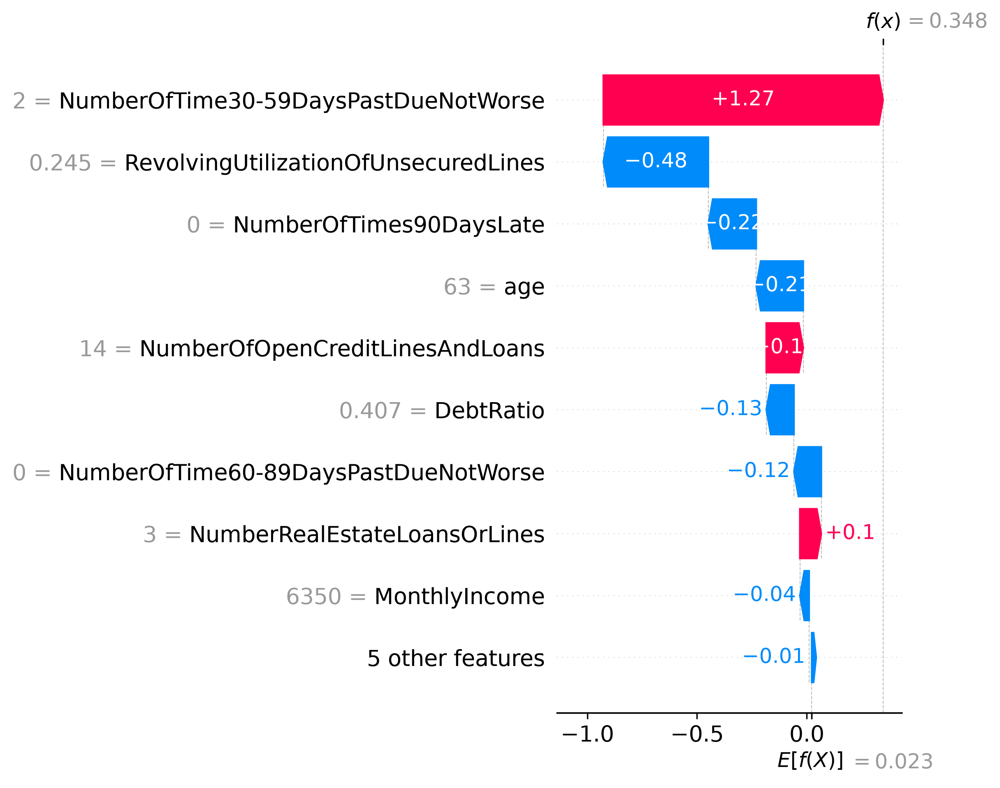
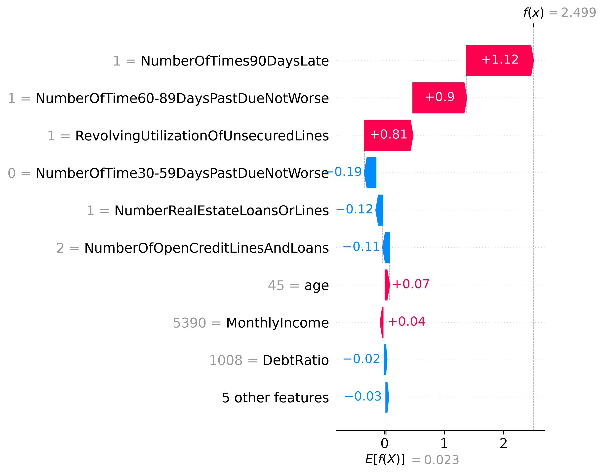
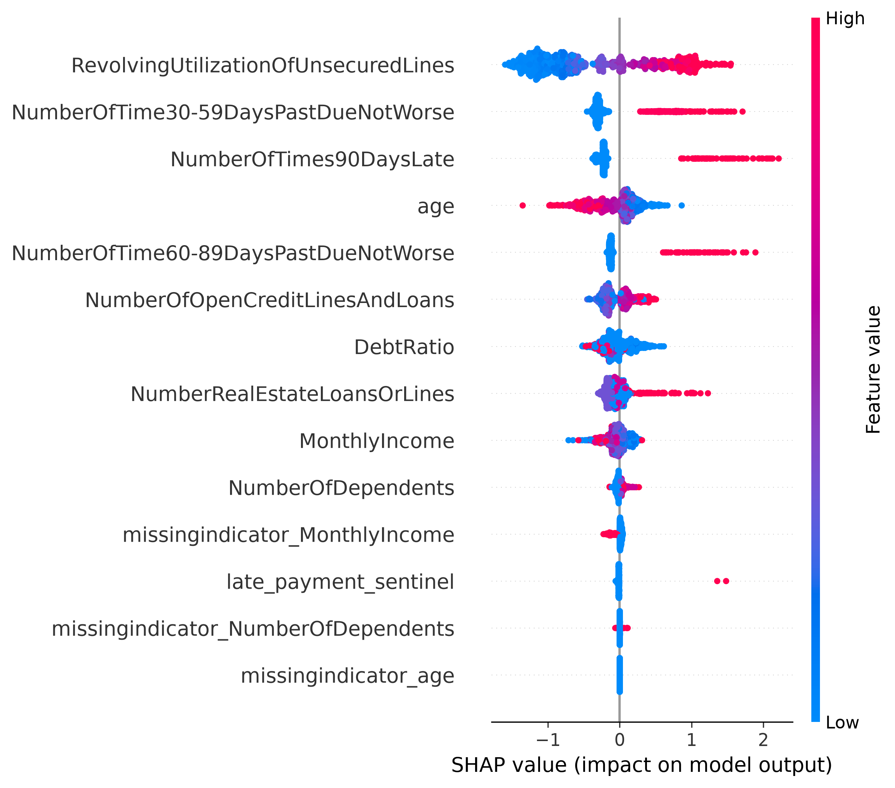

01. Problem & Intended Claim
The objective of RiskLens is to predict whether a customer will experience serious financial difficulties within the next two years.
We investigate whether machine learning models can use historical financial and repayment information to estimate credit default risk.
02. Dataset
This project uses the Give Me Some Credit dataset.
120,000
Development observations
10
Input features
6.684%
Development-set default rate
The target variable is SeriousDlqin2yrs. It indicates whether a customer experienced serious delinquency within two years.
The dataset contains financial information, credit utilization, age, repayment history and other customer-related variables.
03. Preprocessing
- Invalid age values are treated as missing.
- Special late-payment values 96 and 98 are handled as missing values with indicators.
- Missing numerical values are imputed using training-data medians.
- Extreme values in selected numerical features are capped using training-fold percentiles.
- Scaling is applied when required by the model.
Preprocessing transformations are fitted using training data to prevent data leakage.
04. Baseline & Methods
Dummy Classifier
Used as a simple baseline for comparison.
Logistic Regression
Used as an interpretable linear classification baseline.
XGBoost
Used to capture nonlinear relationships and interactions between input features.
05. Evaluation Design
Stratified cross-validation is used during model development to maintain class proportions across folds.
Evaluation metrics include:
- ROC-AUC
- PR-AUC
- Brier Score
- Precision
- Recall
- F1 Score
The final test dataset is kept separate from model development and used for final evaluation.
Calibration Curve

06. Results & Threshold Analysis
A lower threshold catches more actual defaulters but also creates more false alarms. Since the dataset is imbalanced, accuracy can remain high even when a model performs poorly at identifying defaulters. Banks should choose thresholds based on the costs of false positives and false negatives, rather than automatically using 0.5.
Classification Threshold
0.23
Loading threshold data...
Final Test Calibration

07. Error Analysis
False Negatives
Actual defaulters incorrectly predicted as non-defaulters.

False Positives
Actual non-defaulters incorrectly predicted as defaulters.

Global Feature Importance

08. Limitations
- Model predictions do not establish causal relationships.
- The dataset contains limited features and does not provide a complete credit bureau history.
- Historical Kaggle data from around 2011 may not represent current financial behaviour.
- Income information may contain self-reported values and data errors.
- Choosing a classification threshold requires real-world cost information.
- Group fairness across demographic groups has not been fully audited.
09. Conclusion
RiskLens demonstrates how machine learning can be applied to credit default risk prediction.
The project combines data preprocessing, model comparison, threshold analysis, error investigation and SHAP-based explanations.
The system should be treated as a decision-support tool rather than an independent lending authority.
10. Reproduction Steps
- Clone or download the project repository.
- Install the required Python packages.
- Prepare the development dataset.
- Run the notebooks in the notebooks folder.
- Generate the model evaluation results.
- Open this website using a local web server.
Install dependencies using:
pip install -r requirements.txt
11. AI-Use Disclosure
AI tools were used for assistance with understanding concepts, debugging code, improving documentation and organizing parts of the project.
The project implementation, experiments and interpretations should be reviewed and verified by the project author.
12. GitHub Repository
Source code, notebooks and project documentation are available in the project repository.
Visit GitHub